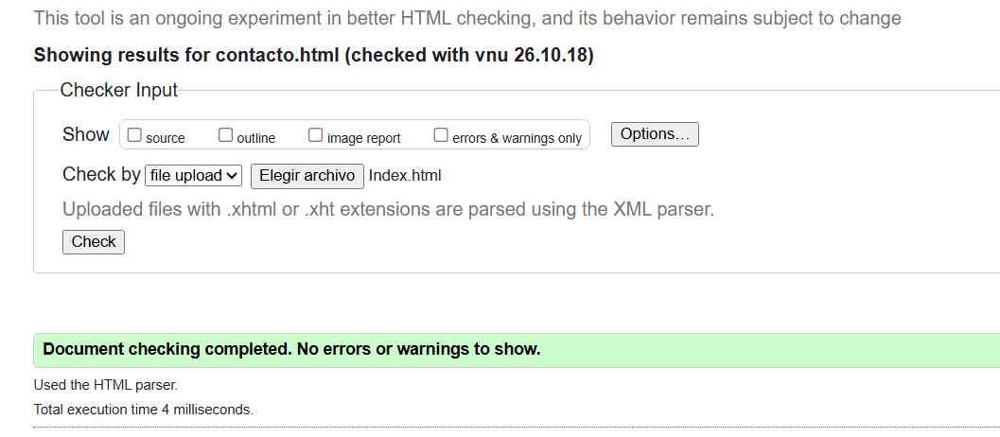
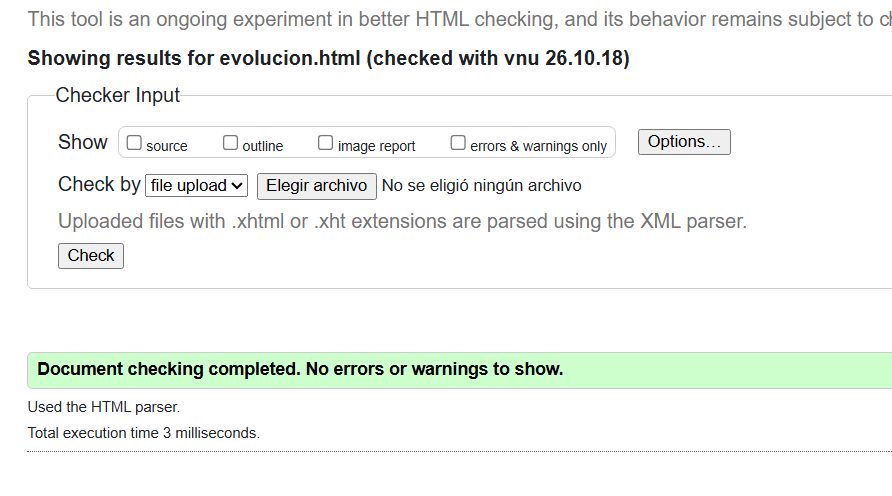
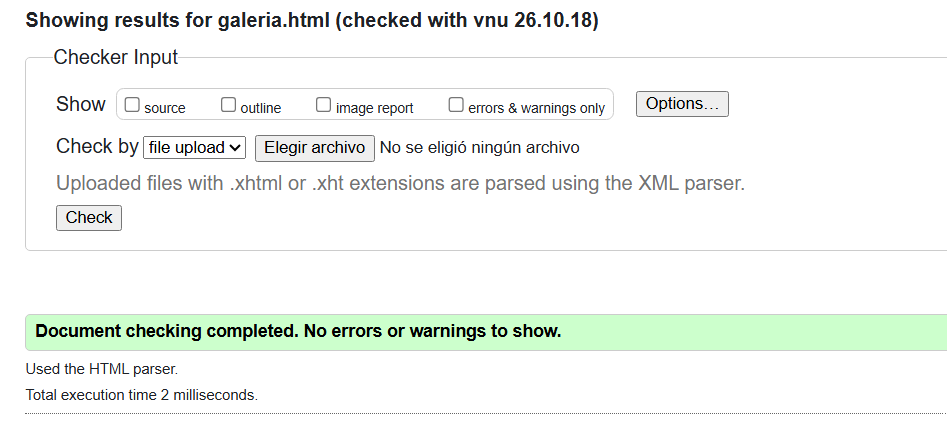
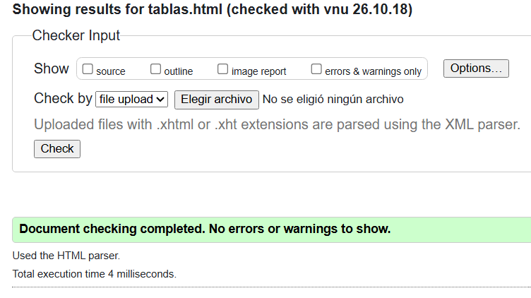
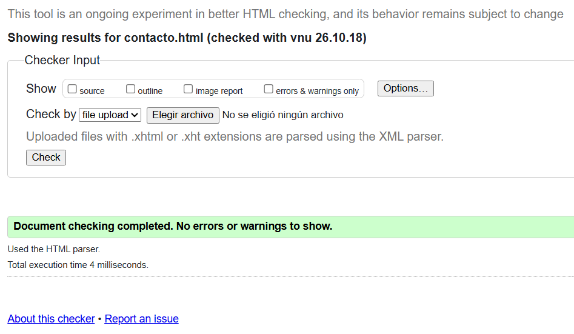

Sobre mí
¡Hola! Soy Jesús Israel Catzim Tzuc, estudiante de la Licenciatura en Ingeniería de Software en modalidad virtual, en la Facultad de Matemáticas de la Universidad Autónoma de Yucatán (UADY).
Este sitio forma parte de mis actividades de desarrollo web, en las que aplico conocimientos de HTML5, CSS3 y JavaScript en el FrontEnd junto con la ejecución de scripts en PHP desde un servidor local y el uso de bases de datos.
Durante mi formación he trabajado con lenguajes como Java, C, C++, Python y PHP, además de conceptos de diseño de software y bases de datos con MySQL.
Presentación Multimedia
A continuación, se integran recursos multimedia locales utilizando etiquetas nativas de HTML5.
Audio: Conceptos de la Web
Video: La Historia de la Web
Accesibilidad y Estándares Web
Evidencia de validación del código HTML5 de este sitio web mediante la herramienta oficial del W3C.
1. Validación de Inicio (index.html)

2. Validación de Evolución (evolucion.html)

3. Validación de Galería (galeria.html)

4. Validación de Tablas (tablas.html)

5. Validación de Contacto (contacto.html)
